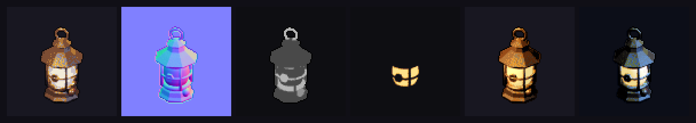
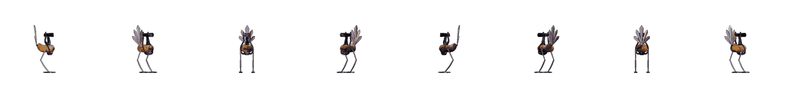
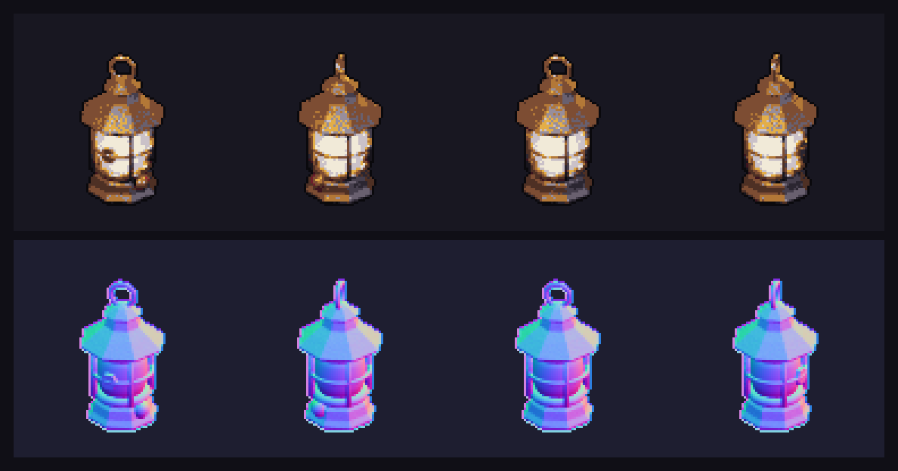
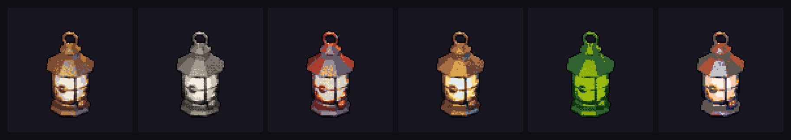

ChiaroPixel
A studio-grade 3D-to-pixel-art baker for Blender (4.2–5.2 LTS) with camera-space normal maps, perceptual OKLab palettes and drop-in Godot 4 resources. Pure Python + NumPy — zero external wheels.

What it does
ChiaroPixel turns 3D characters, animated rigs and environment props into crisp, hand-crafted 2D pixel-art sprite sheets, paired with pixel-accurate camera-space normal maps, specular/gloss masks, emission glow masks, JSON atlases and ready-to-use Godot 4 .tres resources (CanvasTexture + pre-sliced SpriteFrames).
Rooted in studio photography and darkroom tonal control (chiaroscuro), it combines EV-calibrated three-point lighting ratios, perceptual OKLab colour quantisation and temporally locked Bayer dithering — so 2D sprites react dynamically to torches, lanterns, rim light and moonlight without colour muddying or animation flicker.
From my own character, end to end

The robot character above was designed and modeled by me in 3D, then baked with ChiaroPixel into a multi-direction sprite sheet — the full pipeline from character design to a game-ready asset, built and tested on my own work.
Multi-direction turnaround

Every turnaround angle (1 / 2 / 4 / 8 directions) transforms shaded surface and bump normals into active camera space, so dynamic 2D point lights illuminate every facing direction consistently.
Perceptual palettes

Six built-in OKLab palette presets (Lantern Noir 16, Darkroom Silver 8, Cinder Forge 12, Verdant Relic 16, Classic DMG 4, Arcade 16), adaptive cross-frame palette extraction, and custom .hex / .gpl / .pal import — plus an automatic six-panel 2D relight verification strip for every bake.
Why I built it
My pixel-art workflow kept hitting the same wall: hand-drawing every angle and lighting state of a character does not scale, and naive 3D renders look muddy at sprite size. ChiaroPixel is my answer — a production tool that treats a sprite bake like a photography shoot: controlled light, perceptual colour, and materials (normals, specular, emission) that let a 2D sprite live under dynamic game lighting. Building it taught me Python tooling, colour science and pipeline design — the same mix of art and engineering I want to study formally.
💻 Source: github.com/hakhaam-m (GPL-3.0-or-later)